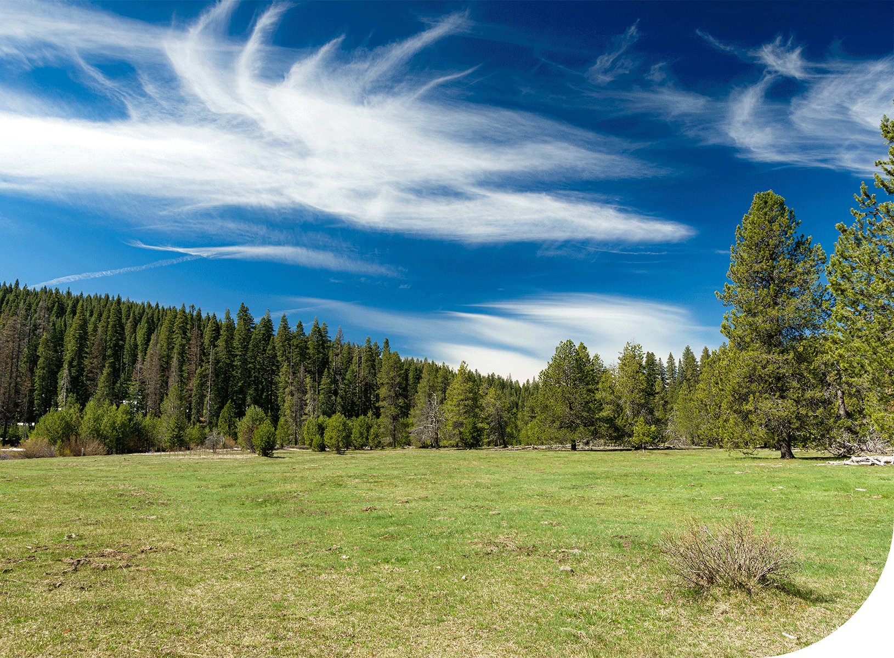

Բնութեան հրաշքները
Բնութիւնն անփոխարինելի աղբիւր է ոգեշնչման ու հանգստութեան համար։ Անտառները, լեռները, եւ գետերը մաքուր աւդի եւ հանգստութեան անսպառ աղբիւրներ են։
Նկատեք բնութեան բազմազանութււնը եւ գունային հարուստ աշխարհը։ Այն հիացնում է եւ զարմացնում իր պարզութեամբ ու հզորութեամբ։
